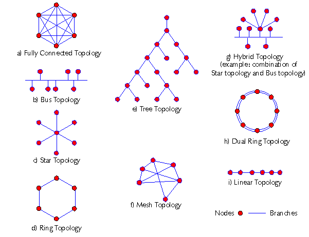
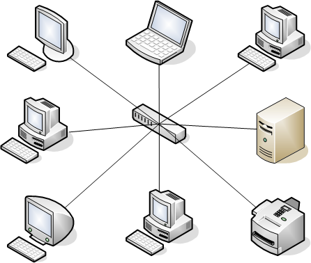

Topologías de red
La topología de red describe cómo se disponen y conectan los nodos (equipos y dispositivos). Se distingue la topología física (cableado real) de la lógica (flujo de datos). La elección de topología influye directamente en el coste de instalación, la facilidad de mantenimiento, la tolerancia a fallos y el rendimiento global.

1. Topología en bus
Todos los equipos comparten un único cable (conducto o backbone). Es simple y económica, pero presenta un punto único de fallo: un corte de cable paraliza toda la red, y al aumentar el tráfico crecen las colisiones. Por ello está prácticamente desaparecida en las LAN modernas (sustituida por el switch).

2. Topología en estrella
Cada equipo se conecta a un nodo central (hub o, preferentemente, switch). Ventajas: si se cae un cable solo se desconecta ese equipo, y el mantenimiento es sencillo. Inconveniente: el nodo central es un SPOF (Single Point of Failure). Es la topología dominante en las redes actuales.
3. Topología en anillo
Cada equipo se conecta con sus dos vecinos formando un círculo; la transmisión se hace mediante un token que circula (Token Ring). Ordenada y predecible, pero frágil: un fallo rompe el anillo. Se mitiga con doble anillo (ej. FDDI), donde el tráfico puede circular en sentido inverso si se corta un tramo.
4. Topología en malla (mesh)
Los nodos están interconectados entre sí, total o parcialmente. Ofrece máxima redundancia y tolerancia a fallos (siempre hay rutas alternativas), pero a costa de un cableado complejo y costoso. Típica del backbone de Internet y de las redes inalámbricas dinámicas (mesh Wi-Fi).
5. Topología en árbol (jerárquica)
Varias estrellas conectadas a un tronco o backbone principal. Muy escalable para campus y empresas: cada departamento es una estrella y todas cuelgan de un núcleo. El fallo del tronco afecta a toda la estructura.
graph TD
subgraph BUS[Bus]
B1[Cable común] --- B2[PC1]
B0 --- B3[PC3]
end
subgraph STAR[Estrella]
S0((Switch)) --- S1[PC1]
S0 --- S2[PC2]
S0 --- S3[PC3]
end
subgraph RING[Anillo]
R1---R2---R3---R1
end
mindmap
root((Redes))
Alcance
PAN
LAN
MAN
WAN
Arquitectura
Cliente-Servidor
P2P
Medio
Cableada
Inalámbrica
| Topología | Ventaja principal | Inconveniente principal | Uso típico |
|---|---|---|---|
| Bus | Muy barata y simple | Punto único de fallo en el cable | Obsoleta / coaxial antiguo |
| Estrella | Fácil mantenimiento | El centro es SPOF | LAN moderna (estándar) |
| Anillo | Orden/token, sin colisiones | Frágil ante cortes | Token Ring, FDDI, MAN |
| Malla | Muy tolerante a fallos | Cara y compleja | Backbone, mesh Wi-Fi |
| Árbol | Escalable | Depende del tronco | Campus/empresa |
Criterio de elección
- Red pequeña y económica: estrella con switch.
- Alta disponibilidad crítica: malla o doble anillo.
- Varios edificios: árbol con backbone de fibra.
Ejemplo resuelto en clase
Caso práctico: Dibujar topología estrella del aula.
- Coloca un nodo central: el switch.
- Conecta cada PC al switch con un enlace punto a punto (cable UTP).
- Señala que si un PC falla, el resto sigue conectado (ventaja de la estrella).
- Compara con bus: en bus, si se rompe el cable, cae toda la red.
graph TD SW[Switch] --- PC1[PC1] SW --- PC2[PC2] SW --- PC3[PC3]
Ejercicio para resolver (que propone el profesor al alumno): El alumno dibuja la topología estrella del aula y explica por qué es la más usada.
Ampliación de contenido
Para entender lo anterior (puentes conceptuales)
- Topología = mapa de "quién se conecta con quién". Antes de comprar cable, hay que decidir la forma: eso determina coste y qué pasa cuando algo se rompe.
- Física vs lógica no siempre coinciden. Una "estrella" puede cablearse así pero usar un protocolo lógico distinto. La forma real y el flujo de datos son dos planos distintos.
- El gran tema es el punto único de fallo (SPOF). Toda topología se juzga por dónde se rompe: si al caer un cable cae todo, es frágil; si solo cae un equipo, es robusta.
Para profundizar en los contenidos actuales
Bus: el ejemplo del SPOF total. Un solo cable compartido; un corte y se cae la red entera. Por eso murió con la llegada del switch (estrella conmutada).
Estrella: SPOF en el centro. Si el switch falla, cae todo; pero al ser un único dispositivo barato y redundante (se puede tener uno de repuesto), es el equilibrio preferido. Por eso domina.
Anillo y el token. El token garantiza que solo hable uno a la vez (sin colisiones), pero un corte rompe el círculo. El doble anillo (FDDI) lo mitiga usando el sentido inverso.
Malla: robustez a cambio de coste. Cada nodo conectado a varios; si cae un enlace, hay rutas alternativas. Ideal para backbones y para Wi-Fi mesh (repetidores que se conectan entre sí). El precio: mucho cable y complejidad.
Árbol (jerárquica): varias estrellas unidas por un tronco; escala bien para Campus/Empresas. Su debilidad es el enlace troncal (si cae, se parten las subredes).
Revisión didáctica
- Estrella no significa "sin fallo". El switch central es SPOF; la ventaja es que el fallo es localizable y sustituible.
- Bus está obsoleta, no "prohibida". Entenderla sirve para leer redes antiguas y exámenes históricos.
- Anillo ≠ estrella. En anillo el fallo aislado rompe todo salvo doble anillo; no confundir con la estrella conmutada.
- Malla es cara, no mejor siempre. Para un aula pequeña no compensa; se reserva para backbone/mesh.
- Física vs lógica. No asumir que la forma del cable es el flujo de datos; pueden diferir.
Hilo de aprendizaje sugerido: (1) ¿qué es topología? (física/lógica) → (2) bus y su SPOF → (3) estrella (el estándar) → (4) anillo/token → (5) malla (redundancia) → (6) árbol (escalar) → (7) elegir según coste/tolerancia a fallos.
Enlaces relacionados
Recursos externos
Vídeos y artículos recomendados para ampliar y preparar el tema: